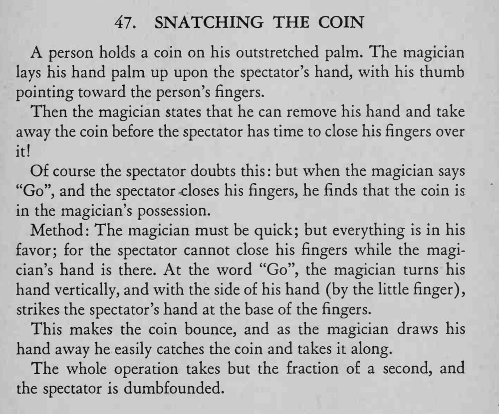

观众摊开手掌托着硬币，魔术师把手覆上去，说能在对方合指之前把硬币拿走；喊“开始”后对方一合手，硬币已在魔术师手中。
敲击要落在手指根部、短促有力，抽手的动作与硬币弹起同时完成。

A person holds a coin on his outstretched palm. The magician lays his hand palm up upon the spectator's hand, with his thumb pointing toward the person's fingers. Then the magician states that he can remove his hand and take away the coin before the spectator has time to close his fingers over Of course the spectator doubts this but when the magician says "Go", and the spectator -closes his fingers, he finds that the coin is in the magician's possession. Method: The magician must be quick; but everything is in his favor; for the spectator cannot close his fingers while the magician's hand is there. At the word "Go", the magician turns his hand vertically, and with the side of his hand (by the little finger) strikes the spectator's hand at the base of the fingers. This makes the coin bounce, and as the magician draws his hand away he easily catches the coin and takes it along. The whole operation takes but the fraction of a second, and the spectator is dumbfounded.